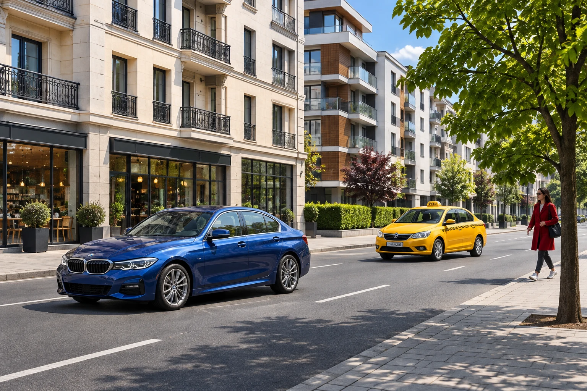
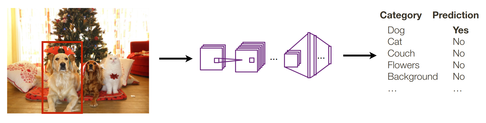
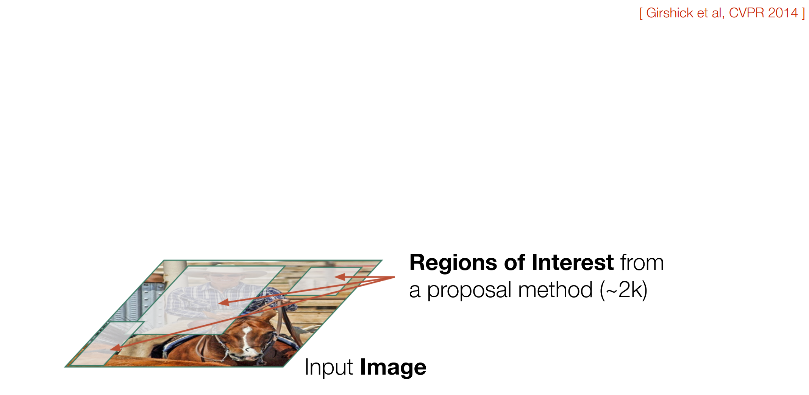
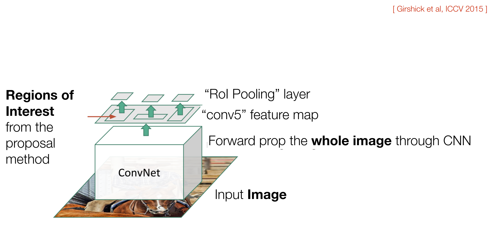
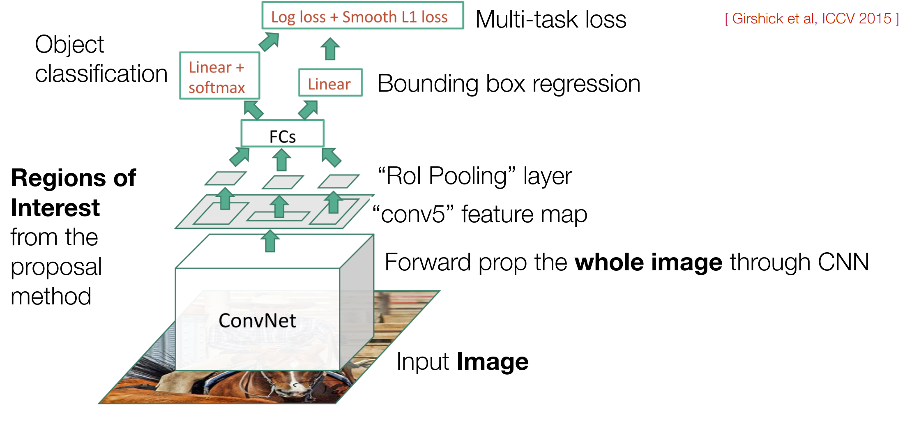
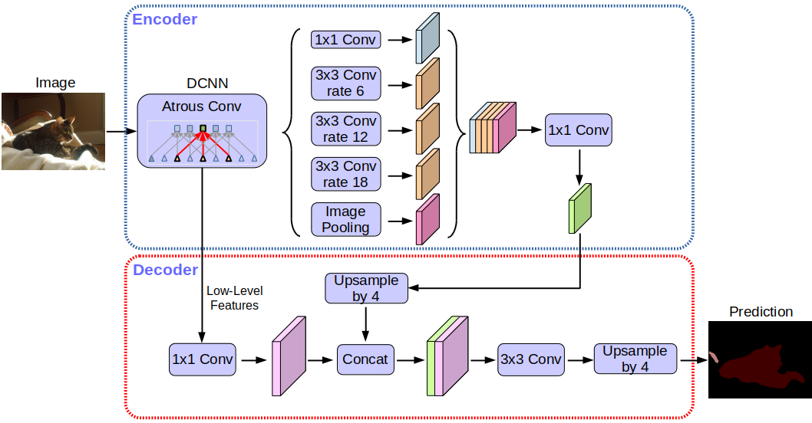
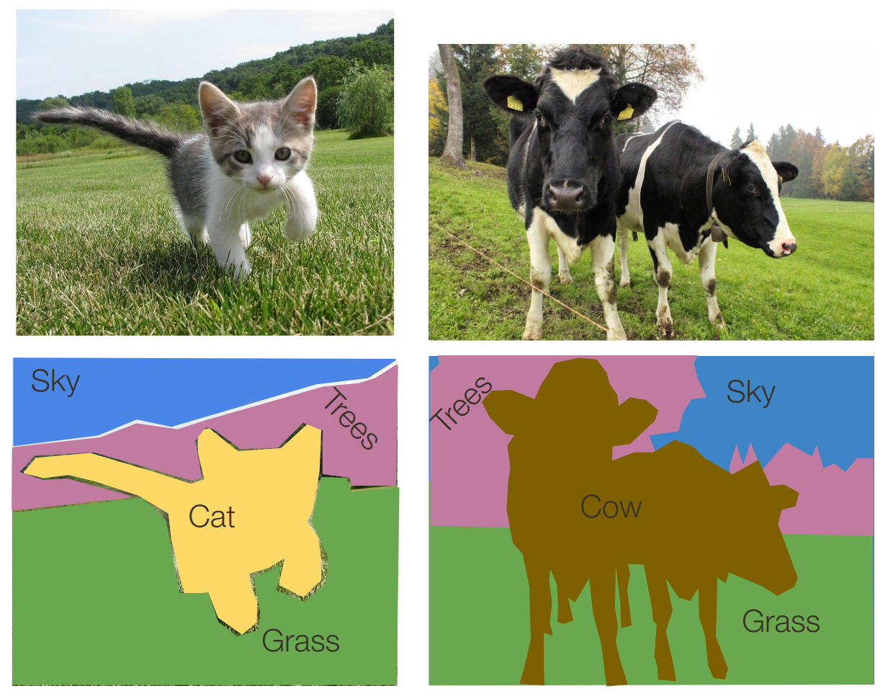
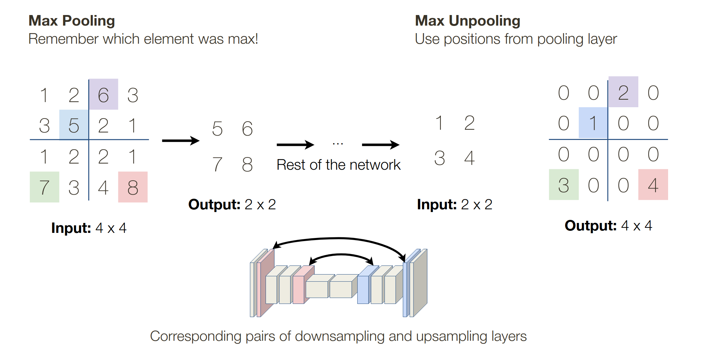

Clasificare
Ce categorie caracterizează imaginea?
(B, C)O perspectivă riguroasă asupra clasificării, detecției și segmentării imaginilor: reprezentări matematice, arhitecturi neuronale, experimente controlate și implementări Python + PyTorch.
Explorează aplicațiile ↓


La același input, o schimbare a formulării problemei transformă arhitectura, reprezentarea etichetelor, funcția de pierdere și metrica de evaluare.
Începem de la o scenă cu două automobile, un pieton, clădiri, vegetație și suprafețe de drum. În funcție de problema formulată, alegem altă ieșire: etichete pe imagine, box-uri, clase per pixel sau identități de instanță.
Ce categorie caracterizează imaginea?
(B, C)Unde sunt obiectele și ce clase au?
boxes, labels, scoresCe clasă are fiecare pixel?
(B, C, H, W)Ce pixeli aparțin fiecărei instanțe?
N măști + clase + scoruriImaginea de mai jos ilustrează foarte clar diferența dintre clasificare, detecție, segmentare semantică și segmentare pe instanțe.

Rețeaua returnează logits, nu probabilități. Funcția softmax le normalizează, iar entropia încrucișată penalizează probabilitatea insuficientă acordată clasei corecte.
Modifică scorurile brute și temperatura. Observă cum se schimbă distribuția, fără să se schimbe neapărat clasa câștigătoare.
zk este logitul clasei k; T este temperatura. Când T → 0⁺, distribuția devine mai concentrată; când T crește, devine mai uniformă.
Formula din dreapta este pentru T = 1. În PyTorch,
nn.CrossEntropyLoss primește direct logits și realizează intern log-softmax
+ NLL.
ResNet, EfficientNet sau ViT extrag reprezentări vizuale.
ℝB×CUn scor pentru fiecare clasă; pentru multiclasă, se folosește softmax.
Alegerea depinde de dezechilibrul claselor și de costul erorilor.
Aceeași imagine poate fi transformată în probleme diferite, în funcție de tipul etichetelor. Selectează o formulare și urmărește forma ieșirii, funcția de activare, pierderea și decizia finală.
—
Backbone CNN clasic, de obicei urmat de global average pooling și un strat liniar.
Patch-urile imaginii devin tokeni; capul de clasificare produce logits pe clase sau scoruri independente.
La single-label se alege clasa cu scorul maxim; la multi-label se aplică praguri individuale, deoarece mai multe etichete pot fi simultan adevărate.

Explorează numeric operația utilizată în Conv2d. În implementările uzuale de
deep learning se calculează cross-correlation (kernelul nu este inversat), deși
stratul se numește convoluțional.
Selectează o celulă din feature map pentru a evidenția fereastra 3 × 3 și a calcula produsul scalar.
Analog pentru lățime. K = dimensiunea filtrului, P = padding, D = dilation, S = stride.
Formula presupune kernel pătrat, groups=1 și bias
activat. În cazul depthwise sau convoluțiilor grupate, numărul de parametri diferă.
Un detector poate produce multe ipoteze suprapuse. Pragul de încredere și Non-Maximum Suppression (NMS) determină ce detecții rămân.
Regiuni, scoruri de încredere și distribuții pe clase; multe ipoteze pot descrie același obiect.
Se elimină ipotezele cu scor insuficient; în practică există și limitări top-K.
Se selectează cea mai bună detecție și se elimină cele cu suprapunere excesivă, de regulă în aceeași clasă.
boxes[N,4], labels[N], scores[N];
N depinde de imagine și de filtrare.
Parcurge procesul unui detector: extragere de caracteristici, generare de candidați, selecție prin NMS și obiecte finale. Poți trece manual sau porni animația.
Compară patru familii de detectoare foarte utilizate: YOLO, Faster R-CNN, DETR și Deformable DETR. Pentru fiecare, urmărește cum sunt generate predicțiile, ce postprocesare apare și în ce scenarii este avantajoasă.
—



În segmentarea semantică, modelul produce scoruri pe clase pentru fiecare poziție
spațială: (B,C,H,W). După argmax(dim=1) se obține o hartă de
etichete (B,H,W).
Cross-entropy se calculează pe fiecare pixel, apoi se agregă. În cazul unei clase
ignorate, se folosește ignore_index cu o valoare care nu reprezintă o clasă
validă.
mIoU este media IoU pe clase, conform protocolului evaluării. Clasele absente în ambele măști trebuie tratate explicit (nu se presupune automat IoU = 1).
Exemple: U-Net combină caracteristici la rezoluții diferite prin skip connections; DeepLabV3 folosește atrous convolution și pooling pe scări multiple. Nu orice segmentator are decoder simetric.
Instance segmentation distinge obiectele individuale; segmentarea panoptică unește într-o singură reprezentare atât zonele stuff (drum, cer, clădiri), cât și obiectele things cu identitate proprie.
Simulare educațională cu scoruri prestabilite. Fiecare query poate prezice o clasă/no-object și o mască; exemplul nu execută un model real.
Propuneri de regiuni → clasificare/regresie de box → mask head; numărul detecțiilor este limitat de candidați și de setările postprocesării.
masks:
(N, 1, H, W)forma tipică returnată de Torchvision la inferență;
valorile sunt probabilitățiUn set fix Q de queries generează predicții de clasă și mască; doar o parte dintre acestea sunt utilizate drept instanțe finale.
class:
(Q,C+1), masks: (Q,h,w)reprezentare conceptuală; detaliile exacte
depind de implementarebox_detections_per_img este o limită de inferență
într-o configurație Mask R-CNN.
(N,4)labels(N,)scores(N,)masks(N,1,H,W)
În Torchvision Mask R-CNN, fiecare mască returnată conține probabilități pentru instanța
respectivă; o mască binară se obține după aplicarea unui prag (de exemplu, masks >
0.5). Pentru un alt model sau o altă bibliotecă, forma poate fi diferită.
Compară direct fotografia originală cu harta de ieșire. Măștile urmăresc contururi de automobile, pieton, arbori, drum și clădiri; nu mai folosim blocuri schematice.
În segmentarea semantică, fiecare pixel primește o clasă. Automobilele au aceeași clasă, fără identități distincte.
Scenă fotorealistă generată pentru acest material; hărțile de segmentare sunt măști didactice ilustrative, nu predicții evaluate ale unui model real. Ele exemplifică structura rezultatelor și interpretarea lor.
Aici comparăm trei direcții complementare: U-Net / DeepLab pentru semantică, Mask R-CNN pentru instanțe și Mask2Former / OneFormer pentru segmentare universală.
—
U-Net combină două obiective aparent contradictorii: context semantic prin reducerea rezoluției și precizie spațială prin reconstruirea acesteia. Schema arată o variantă didactică cu trei niveluri de downsampling, padding pentru păstrarea dimensiunilor și intrare de 512 × 512 pixeli. Selectează orice bloc sau legătură albastră pentru a afla exact ce operație realizează.
Imaginea originală este introdusă în rețea și normalizată
—
—
Brațul stâng crește câmpul receptiv, de regulă dublând canalele la fiecare reducere a rezoluției. Bottleneck-ul agregă informația semantică. Brațul drept mărește rezoluția și concatenează reprezentări de la nivelurile corespondente din encoder. Rezultatul poate păstra simultan contextul necesar clasificării și contururile fine necesare localizării fiecărui pixel. Dimensiunile și numărul canalelor din desen sunt ilustrative; U-Net-ul original poate folosi alte detalii de padding și de număr de niveluri.
DeepLabV3+ combină un encoder bogat semantic, un modul ASPP pentru context multi-scală și un decoder ușor care reintroduce detalii locale. Apasă pe zonele evidențiate pentru a vedea explicații sau mergi direct la secțiunea despre atrous convolution.

În encoder, DeepLab înlocuiește o parte dintre downsampling-uri cu convoluții dilatate. Astfel păstrează o rezoluție spațială mai bună, fără să sacrifice câmpul receptiv.
Secțiunea următoare descompune mecanismul în pași: mai întâi nucleul standard, apoi dilatarea, câmpul receptiv efectiv, folosirea paralelă în ASPP și rolul final în DeepLabV3+. Poți schimba atât rata de dilatare, cât și pasul explicației.
Începem cu o convoluție 3 × 3 clasică. Nucleul citește nouă poziții adiacente și produce o valoare de ieșire pentru pixelul central.
Observă că numărul de parametri rămâne neschimbat: tot 9 greutăți pentru fiecare canal de intrare. Se modifică doar pozițiile din feature map pe care nucleul le citește.
În backbone, convoluțiile dilatate permit menținerea unei rezoluții spațiale mai bune decât un lanț lung de pooling-uri. ASPP exploatează tocmai această proprietate, rulând în paralel mai multe ramuri cu rate diferite.



argmax.


O metrică trebuie aleasă în funcție de unitatea de predicție: clasă pe imagine, obiect detectat sau regiune de pixeli.
Relația dintre Dice și IoU este exactă pentru aceleași două mulțimi, când reuniunea este nenulă. Pentru metrici mediate pe clase/imagini, transformarea nu se aplică, în general, după mediere.
Detecțiile se ordonează după scor; la un prag IoU se determină TP/FP și se construiește curba precizie–recall. AP rezumă această curbă; protocolul COCO raportează media pe praguri IoU de la 0,50 la 0,95 cu pas 0,05 și pe categorii.
| Sarcină | Metrici recomandate | Ce nu trebuie omis |
|---|---|---|
| Clasificare | Accuracy, macro-F1, AUROC | Dezechilibru de clase și calibrare |
| Detecție | AP / mAP, recall pe obiecte | Prag IoU, scor, dimensiunea obiectelor |
| Segmentare semantică | mIoU, Dice pe clase | Clase absente, ignore_index, contururi |
| Segmentare instanțe | Mask AP, mask IoU | Matching între instanțe, false positives |
Strategiile de augmentare, adnotare și evaluare pot schimba rezultatul mai mult decât alegerea unei arhitecturi suplimentare.
Separă train / validation / test; pentru date medicale, evită prezența aceluiași pacient în split-uri diferite. Pentru video, separă secvențe înrudite.
Flip/crop trebuie aplicate și bounding box-urilor, și măștilor. Luminozitatea schimbă imaginea, nu eticheta geometrică.
Folosește normalizarea, redimensionarea și convenția de canal asociate ponderilor preantrenate.
Raportează praguri, rezoluție, hardware, latență, seed și versiuni de biblioteci.
Near-duplicates sau imagini ale aceluiași subiect între train și test supraestimează performanța.
Camera, sezonul, iluminarea, spitalul sau populația pot schimba distribuția datelor.
Un scor de 0,9 nu garantează automat o rată de corectitudine de 90%.
AP mare poate fi insuficient dacă inferența depășește bugetul de timp sau memorie.
Exemple complete, comentate, care explică forma tensorilor, preprocesarea și
interpretarea rezultatului. Codul utilizează API-ul de ponderi moderne din torchvision.
Formularea cerinței operaționale determină ce adnotări trebuie colectate și ce output trebuie antrenat.
Cerința cere să identificăm fiecare vehicul separat și să estimăm poziția sa în cadrul curent.
Selectează tipul ieșirii dorite și constrângerile aplicației. Materialul recomandă o formulare de problemă, un tip de adnotare, o familie de modele și metrici relevante.
Obiectiv: o imagine poate conține simultan infiltrat, efuziune, cardiomegalie etc. Formularea naturală este multi-label.
Obiectiv: drumul și trotuarul sunt regiuni de tip stuff, iar mașinile și pietonii sunt things. Pentru o înțelegere completă a scenei, formularea potrivită este panoptică.
14 întrebări conceptuale pentru nivelul anului IV: forme de tensori, funcții de pierdere, NMS, arhitecturi moderne, segmentare și protocol experimental.
Articole fundamentale, documentație relevantă și puncte de plecare pentru aprofundarea clasificării, detecției și segmentării imaginilor.